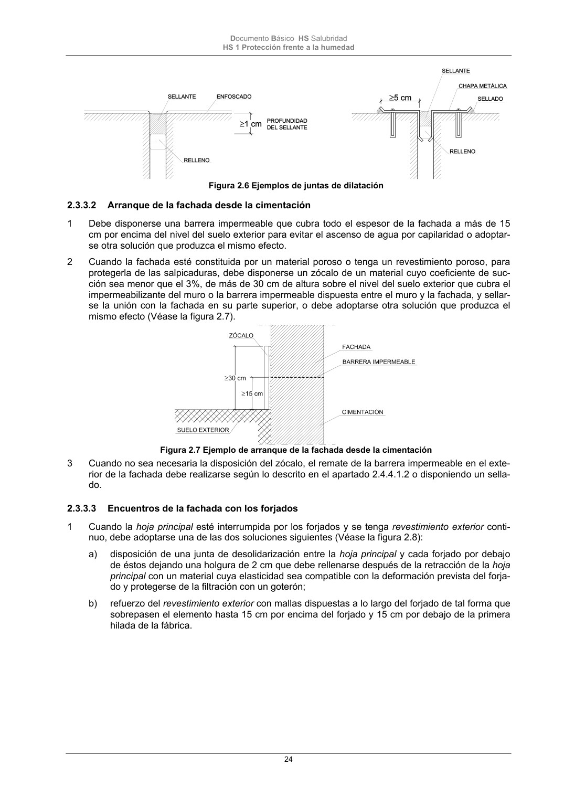
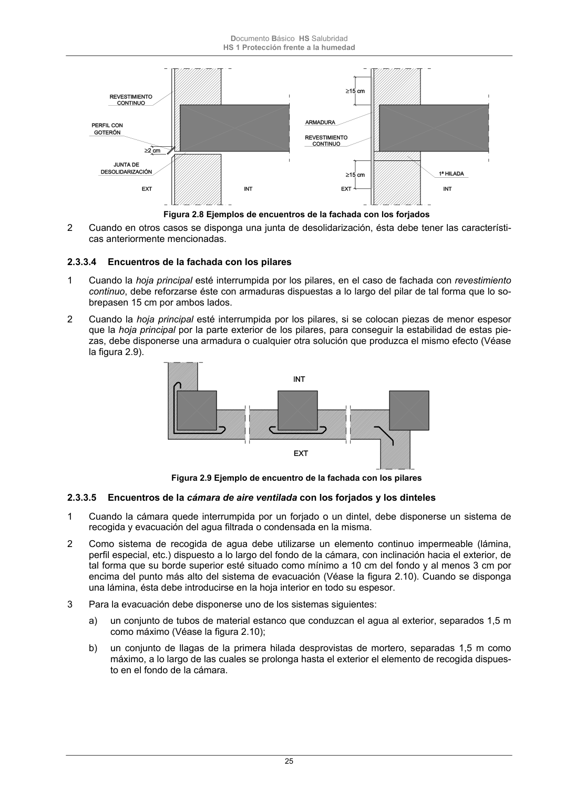
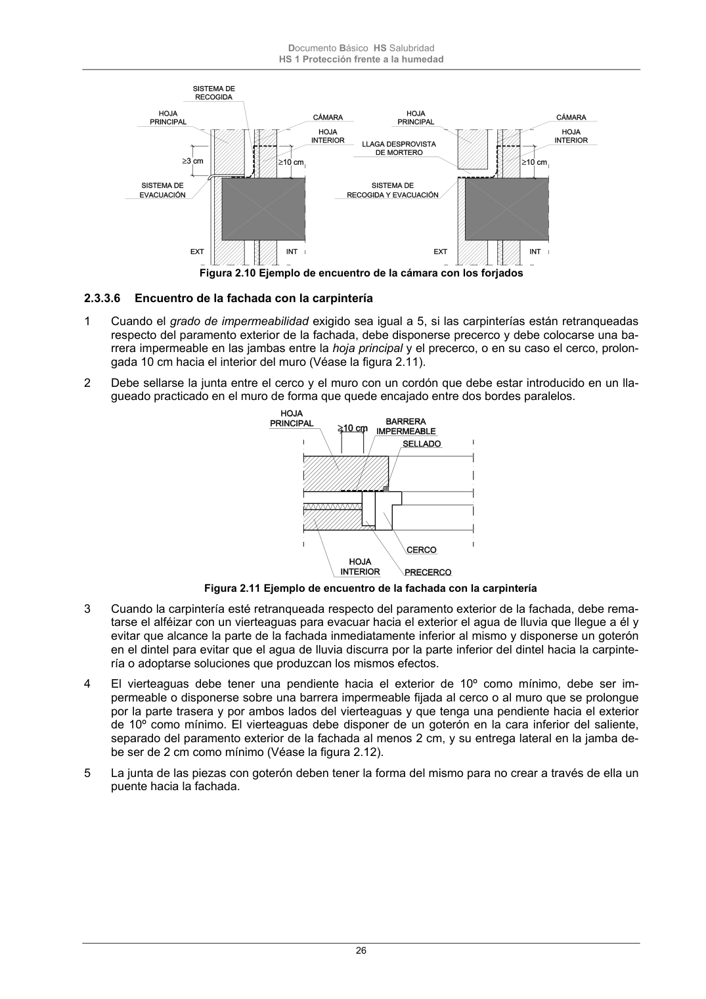
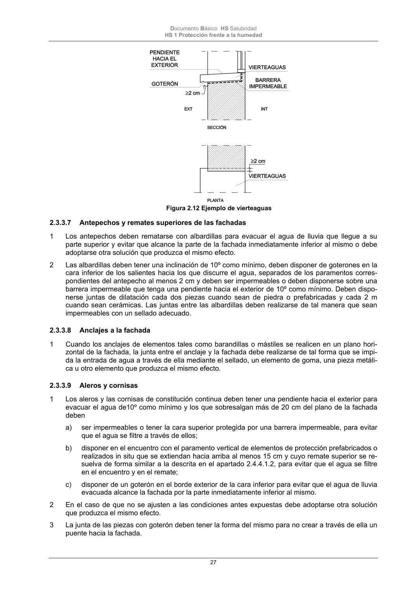

DB-HS Salubridad · edición 2022-06-14 · capa oficial
Documento DB-HS-oficial · SHA-256 del PDF 68df3caacc95f71aee2ec1ba7b2c65ae66155c21e3a8785521b8fdd4fd640d3b
Copia fiel del PDF fuente · Fuente oficial
Ficha de la disposición en la fuente oficial
Formatos: JSON del segmento · Markdown
disposición de una junta de desolidarización entre la hoja principal y cada forjado por debajo de éstos dejando una holgura de 2 cm que debe rellenarse después de la retracción de la hoja principal con un material cuya elasticidad sea compatible con la deformación prevista del forja- do y protegerse de la filtración con un goterón; b) refuerzo del revestimiento exterior con mallas dispuestas a lo largo del forjado de tal forma que sobrepasen el elemento hasta 15 cm por encima del forjado y 15 cm por debajo de la primera hilada de la fábrica. Documento Básico HS Salubridad HS 1 Protección frente a la humedad 25 Figura 2.8 Ejemplos de encuentros de la fachada con los forjados 2 Cuando en otros casos se disponga una junta de desolidarización, ésta debe tener las característi- cas anteriormente mencionadas. 2.3.3.4 Encuentros de la fachada con los pilares 1 Cuando la hoja principal esté interrumpida por los pilares, en el caso de fachada con revestimiento continuo, debe reforzarse éste con armaduras dispuestas a lo largo del pilar de tal forma que lo so- brepasen 15 cm por ambos lados. 2 Cuando la hoja principal esté interrumpida por los pilares, si se colocan piezas de menor espesor que la hoja principal por la parte exterior de los pilares, para conseguir la estabilidad de estas pie- zas, debe disponerse una armadura o cualquier otra solución que produzca el mismo efecto (Véase la figura 2.9). Figura 2.9 Ejemplo de encuentro de la fachada con los pilares 2.3.3.5 Encuentros de la cámara de aire ventilada con los forjados y los dinteles 1 Cuando la cámara quede interrumpida por un forjado o un dintel, debe disponerse un sistema de recogida y evacuación del agua filtrada o condensada en la misma. 2 Como sistema de recogida de agua debe utilizarse un elemento continuo impermeable (lámina, perfil especial, etc.) dispuesto a lo largo del fondo de la cámara, con inclinación hacia el exterior, de tal forma que su borde superior esté situado como mínimo a 10 cm del fondo y al menos 3 cm por encima del punto más alto del sistema de evacuación (Véase la figura 2.10). Cuando se disponga una lámina, ésta debe introducirse en la hoja interior en todo su espesor. 3 Para la evacuación debe disponerse uno de los sistemas siguientes: a) un conjunto de tubos de material estanco que conduzcan el agua al exterior, separados 1,5 m como máximo (Véase la figura 2.10); b) un conjunto de llagas de la primera hilada desprovistas de mortero, separadas 1,5 m como máximo, a lo largo de las cuales se prolonga hasta el exterior el elemento de recogida dispues- to en el fondo de la cámara. Documento Básico HS Salubridad HS 1 Protección frente a la humedad 26 Figura 2.10 Ejemplo de encuentro de la cámara con los forjados 2.3.3.6 Encuentro de la fachada con la carpintería 1 Cuando el grado de impermeabilidad exigido sea igual a 5, si las carpinterías están retranqueadas respecto del paramento exterior de la fachada, debe disponerse precerco y debe colocarse una ba- rrera impermeable en las jambas entre la hoja principal y el precerco, o en su caso el cerco, prolon- gada 10 cm hacia el interior del muro (Véase la figura 2.11). 2 Debe sellarse la junta entre el cerco y el muro con un cordón que debe estar introducido en un lla- gueado practicado en el muro de forma que quede encajado entre dos bordes paralelos. Figura 2.11 Ejemplo de encuentro de la fachada con la carpintería 3 Cuando la carpintería esté retranqueada respecto del paramento exterior de la fachada, debe rema- tarse el alféizar con un vierteaguas para evacuar hacia el exterior el agua de lluvia que llegue a él y evitar que alcance la parte de la fachada inmediatamente inferior al mismo y disponerse un goterón en el dintel para evitar que el agua de lluvia discurra por la parte inferior del dintel hacia la carpinte- ría o adoptarse soluciones que produzcan los mismos efectos. 4 El vierteaguas debe tener una pendiente hacia el exterior de 10º como mínimo, debe ser im- permeable o disponerse sobre una barrera impermeable fijada al cerco o al muro que se prolongue por la parte trasera y por ambos lados del vierteaguas y que tenga una pendiente hacia el exterior de 10º como mínimo. El vierteaguas debe disponer de un goterón en la cara inferior del saliente, separado del paramento exterior de la fachada al menos 2 cm, y su entrega lateral en la jamba de- be ser de 2 cm como mínimo (Véase la figura 2.12). 5 La junta de las piezas con goterón deben tener la forma del mismo para no crear a través de ella un puente hacia la fachada. Documento Básico HS Salubridad HS 1 Protección frente a la humedad 27 Figura 2.12 Ejemplo de vierteaguas 2.3.3.7 Antepechos y remates superiores de las fachadas 1 Los antepechos deben rematarse con albardillas para evacuar el agua de lluvia que llegue a su parte superior y evitar que alcance la parte de la fachada inmediatamente inferior al mismo o debe adoptarse otra solución que produzca el mismo efecto. 2 Las albardillas deben tener una inclinación de 10º como mínimo, deben disponer de goterones en la cara inferior de los salientes hacia los que discurre el agua, separados de los paramentos corres- pondientes del antepecho al menos 2 cm y deben ser impermeables o deben disponerse sobre una barrera impermeable que tenga una pendiente hacia el exterior de 10º como mínimo. Deben dispo- nerse juntas de dilatación cada dos piezas cuando sean de piedra o prefabricadas y cada 2 m cuando sean cerámicas. Las juntas entre las albardillas deben realizarse de tal manera que sean impermeables con un sellado adecuado. 2.3.3.8 Anclajes a la fachada 1 Cuando los anclajes de elementos tales como barandillas o mástiles se realicen en un plano hori- zontal de la fachada, la junta entre el anclaje y la fachada debe realizarse de tal forma que se impi- da la entrada de agua a través de ella mediante el sellado, un elemento de goma, una pieza metáli- ca u otro elemento que produzca el mismo efecto. 2.3.3.9 Aleros y cornisas 1 Los aleros y las cornisas de constitución continua deben tener una pendiente hacia el exterior para evacuar el agua de10º como mínimo y los que sobresalgan más de 20 cm del plano de la fachada deben a) ser impermeables o tener la cara superior protegida por una barrera impermeable, para evitar que el agua se filtre a través de ellos; b) disponer en el encuentro con el paramento vertical de elementos de protección prefabricados o realizados in situ que se extiendan hacia arriba al menos 15 cm y cuyo remate superior se re- suelva de forma similar a la descrita en el apartado 2.4.4.1.2, para evitar que el agua se filtre en el encuentro y en el remate; c) disponer de un goterón en el borde exterior de la cara inferior para evitar que el agua de lluvia evacuada alcance la fachada por la parte inmediatamente inferior al mismo. 2 En el caso de que no se ajusten a las condiciones antes expuestas debe adoptarse otra solución que produzca el mismo efecto. 3 La junta de las piezas con goterón deben tener la forma del mismo para no crear a través de ella un puente hacia la fachada. Documento Básico HS Salubridad HS 1 Protección frente a la humedad 28



